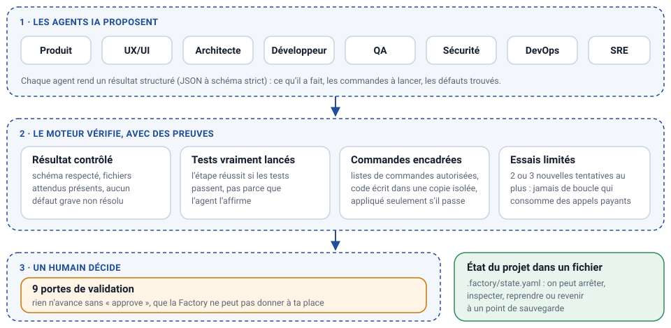
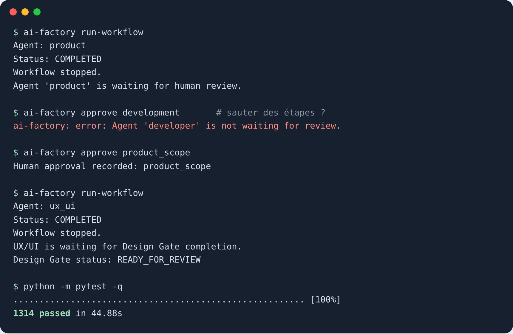
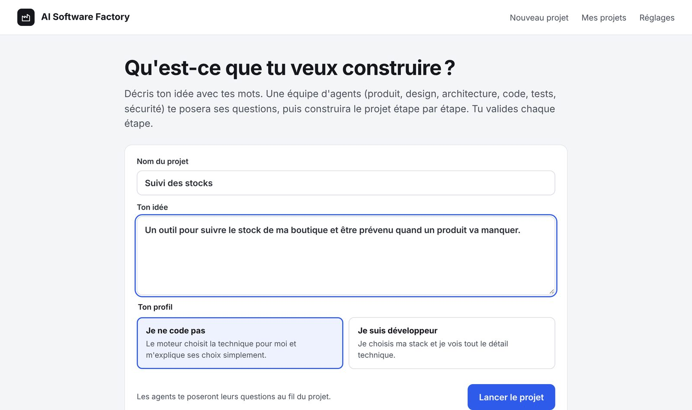
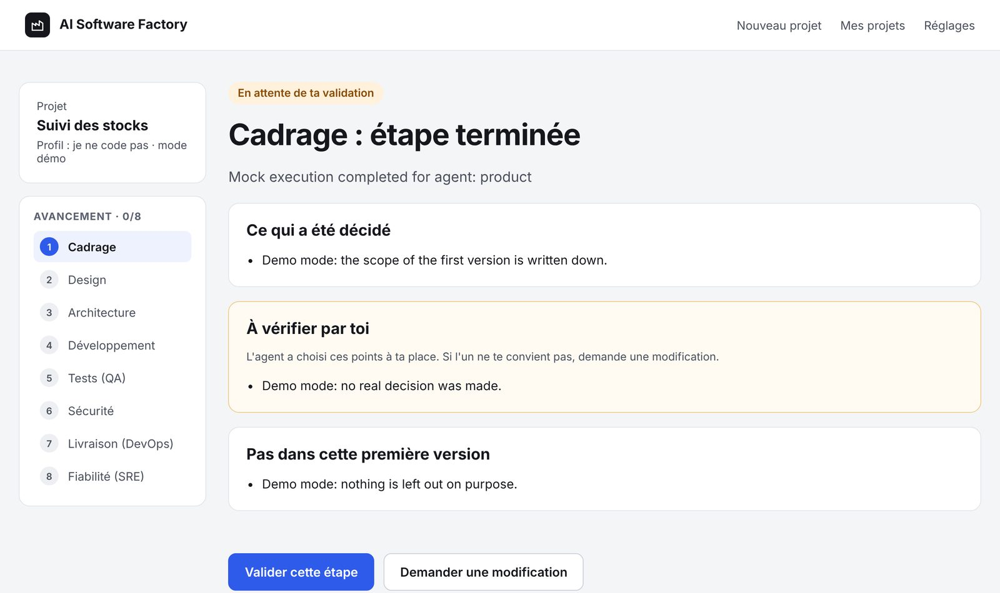
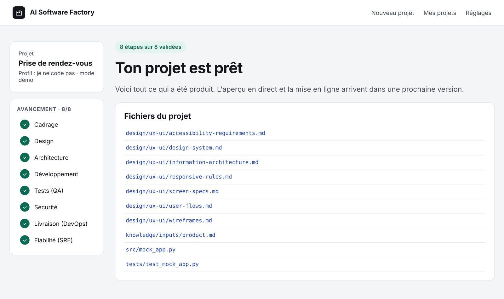

Étude de cas · IA encadrée et qualité logicielle
AI Software Factory
Un outil qui fait passer un projet de l’idée au code validé avec huit agents IA spécialisés : produit, design, architecture, code, tests, sécurité, livraison, fiabilité. L’IA propose, le moteur vérifie avec des preuves, et un humain valide chaque étape.
- 8agents spécialisés, un par métier
- 9portes de validation humaine
- 1 314tests automatiques
- 2 × 2systèmes (Linux, Windows) et versions de Python testés
Situation
Les assistants d’IA écrivent du code très vite, mais on ne sait pas toujours ce qu’ils ont vraiment fait. Un agent peut annoncer « tests réussis » sans les avoir lancés, proposer une commande dangereuse, ou réessayer en boucle et consommer des appels payants.
Tâche
Construire un outil qui mène un projet logiciel de l’idée jusqu’au code prêt pour la production, avec une équipe d’agents IA, sans jamais faire confiance à ce qu’un agent affirme : seules les preuves comptent, et c’est un humain qui décide.
L’outil devait aussi pouvoir s’arrêter et reprendre à tout moment, et fonctionner avec plusieurs fournisseurs d’IA.
Actions
- Découper le travail en métiers. Huit agents, chacun avec un contrat écrit : ce qu’il reçoit, ce qu’il doit rendre, ce qu’il n’a pas le droit de faire. Ils travaillent tous à partir du même contexte de projet.
- Exiger des résultats vérifiables. Chaque agent rend un résultat structuré, en JSON à schéma strict. Le moteur le contrôle avant de l’accepter.
- Décider sur les preuves. Une étape ne réussit que si les tests et les contrôles ont vraiment été exécutés et sont passés, et si aucun défaut critique ou élevé n’est resté ouvert. Ce que l’agent déclare ne suffit pas.
- Encadrer ce que l’IA exécute. Les commandes proposées sont filtrées par des listes d’autorisation. Le code est écrit dans une copie isolée du projet, puis appliqué seulement si tout passe. Le nombre de nouvelles tentatives est limité, pour qu’aucune boucle ne consomme d’appels payants sans fin.
- Garder l’humain aux commandes. Neuf portes de validation : rien ne passe à l’étape suivante sans une approbation humaine, que l’outil ne peut pas enregistrer lui-même. Un défaut trouvé par la QA ou la sécurité renvoie le travail au développeur et rouvre les validations suivantes.
- Rendre l’outil sûr à utiliser. L’état complet du projet tient dans un fichier : on peut arrêter, reprendre ou revenir à un point de sauvegarde. L’interface web n’écoute que sur la machine et refuse les requêtes venant d’autres sites ; la clé d’API est stockée lisible par son seul propriétaire.
Résultats
- Un outil en ligne de commande et une interface web en français, utilisables par un développeur comme par quelqu’un qui ne code pas.
- Un mode démo hors ligne fait tourner tout le parcours sans clé ni coût, et sert aux tests.
- 1 314 tests automatiques, rejoués à chaque modification sur Linux et Windows, avec Python 3.11 et 3.13.
- Toute la conception est documentée : contrat de chaque agent, protocole entre agents, audit des boucles de nouvelles tentatives.
Ce que j’en retiens. « L’IA propose, le moteur vérifie, les preuves décident. » Plus un outil est autonome, plus ses garde-fous doivent être explicites et testés : c’est la même logique qu’une chaîne d’intégration continue.
Architecture

En images



